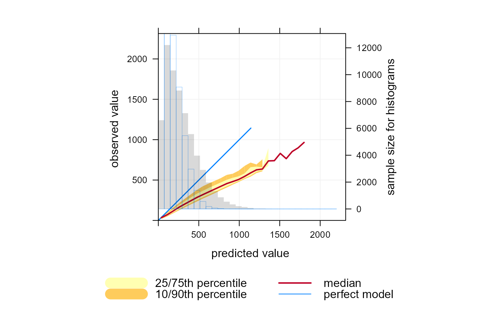

R/conditionalQuantile.R
conditionalQuantile.RdFunction to calculate conditional quantiles with flexible conditioning. The function is for use in model evaluation and more generally to help better understand forecast predictions and how well they agree with observations.
conditionalQuantile( mydata, obs = "obs", mod = "mod", type = "default", bins = 31, min.bin = c(10, 20), xlab = "predicted value", ylab = "observed value", col = brewer.pal(5, "YlOrRd"), key.columns = 2, key.position = "bottom", auto.text = TRUE, ... )
| mydata | A data frame containing the field |
|---|---|
| obs | The name of the observations in |
| mod | The name of the predictions (modelled values) in |
| type |
It is also possible to choose Type can be up length two e.g. |
| bins | Number of bins to be used in calculating the different quantile levels. |
| min.bin | The minimum number of points required for the estimates of the 25/75th and 10/90th percentiles. |
| xlab | label for the x-axis, by default “predicted value”. |
| ylab | label for the y-axis, by default “observed value”. |
| col | Colours to be used for plotting the uncertainty bands and median line. Must be of length 5 or more. |
| key.columns | Number of columns to be used in the key. |
| key.position | Location of the key e.g. “top”,
“bottom”, “right”, “left”. See |
| auto.text | Either |
| ... | Other graphical parameters passed onto |
Conditional quantiles are a very useful way of considering model performance against observations for continuous measurements (Wilks, 2005). The conditional quantile plot splits the data into evenly spaced bins. For each predicted value bin e.g. from 0 to 10~ppb the corresponding values of the observations are identified and the median, 25/75th and 10/90 percentile (quantile) calculated for that bin. The data are plotted to show how these values vary across all bins. For a time series of observations and predictions that agree precisely the median value of the predictions will equal that for the observations for each bin.
The conditional quantile plot differs from the quantile-quantile plot (Q-Q plot) that is often used to compare observations and predictions. A Q-Q~plot separately considers the distributions of observations and predictions, whereas the conditional quantile uses the corresponding observations for a particular interval in the predictions. Take as an example two time series, the first a series of real observations and the second a lagged time series of the same observations representing the predictions. These two time series will have identical (or very nearly identical) distributions (e.g. same median, minimum and maximum). A Q-Q plot would show a straight line showing perfect agreement, whereas the conditional quantile will not. This is because in any interval of the predictions the corresponding observations now have different values.
Plotting the data in this way shows how well predictions agree with
observations and can help reveal many useful characteristics of how well
model predictions agree with observations --- across the full distribution
of values. A single plot can therefore convey a considerable amount of
information concerning model performance. The conditionalQuantile
function in openair allows conditional quantiles to be considered in a
flexible way e.g. by considering how they vary by season.
The function requires a data frame consisting of a column of
observations and a column of predictions. The observations are
split up into bins according to values of the
predictions. The median prediction line together with the 25/75th
and 10/90th quantile values are plotted together with a line
showing a “perfect” model. Also shown is a histogram of
predicted values (shaded grey) and a histogram of observed values
(shown as a blue line).
Far more insight can be gained into model performance through conditioning
using type. For example, type = "season" will plot
conditional quantiles by each season. type can also be a factor or
character field e.g. representing different models used.
See Wilks (2005) for more details and the examples below.
Murphy, A. H., B.G. Brown and Y. Chen. (1989) Diagnostic Verification of Temperature Forecasts, Weather and Forecasting, Volume: 4, Issue: 4, Pages: 485-501.
Wilks, D. S., 2005. Statistical Methods in the Atmospheric Sciences, Volume 91, Second Edition (International Geophysics), 2nd Edition. Academic Press.
See modStats for model evaluation statistics and the
package verification for comprehensive functions for forecast
verification.
David Carslaw
# load example data from package data(mydata) ## make some dummy prediction data based on 'nox' mydata$mod <- mydata$nox*1.1 + mydata$nox * runif(1:nrow(mydata)) # basic conditional quantile plot ## A "perfect" model is shown by the blue line ## predictions tend to be increasingly positively biased at high nox, ## shown by departure of median line from the blue one. ## The widening uncertainty bands with increasing NOx shows that ## hourly predictions are worse for higher NOx concentrations. ## Also, the red (median) line extends beyond the data (blue line), ## which shows in this case some predictions are much higher than ## the corresponding measurements. Note that the uncertainty bands ## do not extend as far as the median line because there is insufficient # to calculate them conditionalQuantile(mydata, obs = "nox", mod = "mod")  ## can split by season to show seasonal performance (not very ## enlightening in this case - try some real data and it will be!) if (FALSE) conditionalQuantile(mydata, obs = "nox", mod = "mod", type = "season")